Hello!

・写真のようなもの。
・基盤を作る際に必要になる。
・自動配線ソフト
・まずは自動配線ソフトをダウンロードして開いてみる。
・開けない場合はjavaの環境が整っていない可能性があるため、下記をダウンロード。
・java
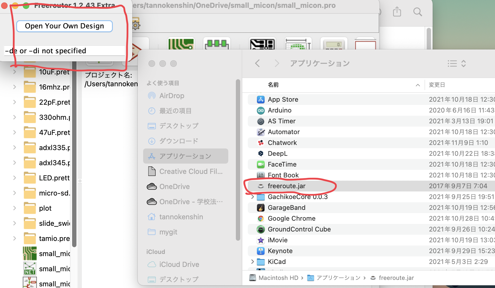
・インストールしたものを開いたら小さいウィンドウが出てくる。
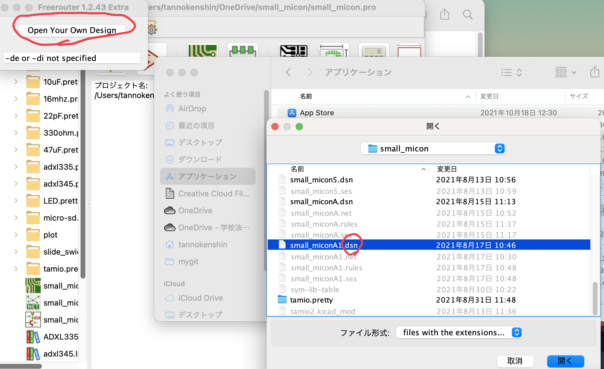
・Open Your Own Designを選択して、拡張子がdsnのファイルを選択すると開ける。
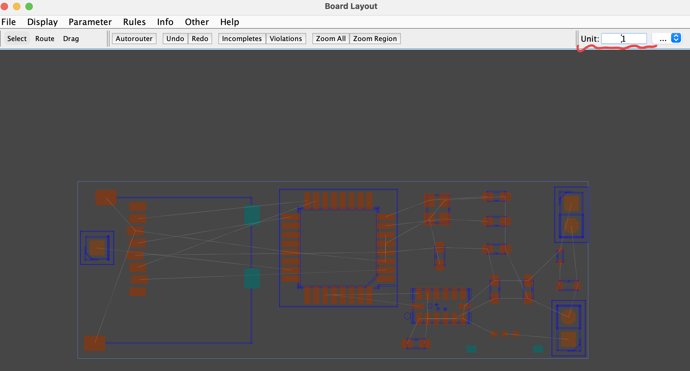
・赤線の部分を25に変更。
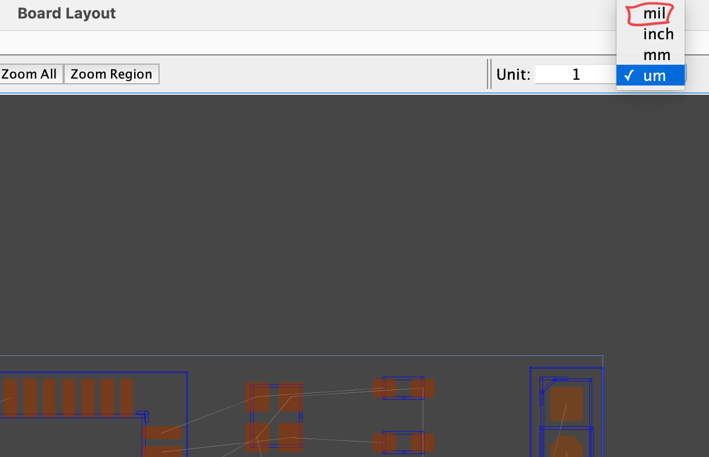
・milに変更。
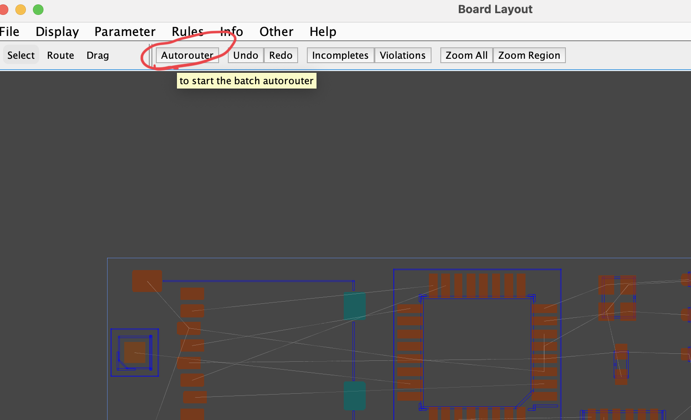
・Autorouterをクリックすると自動配線が始まる。
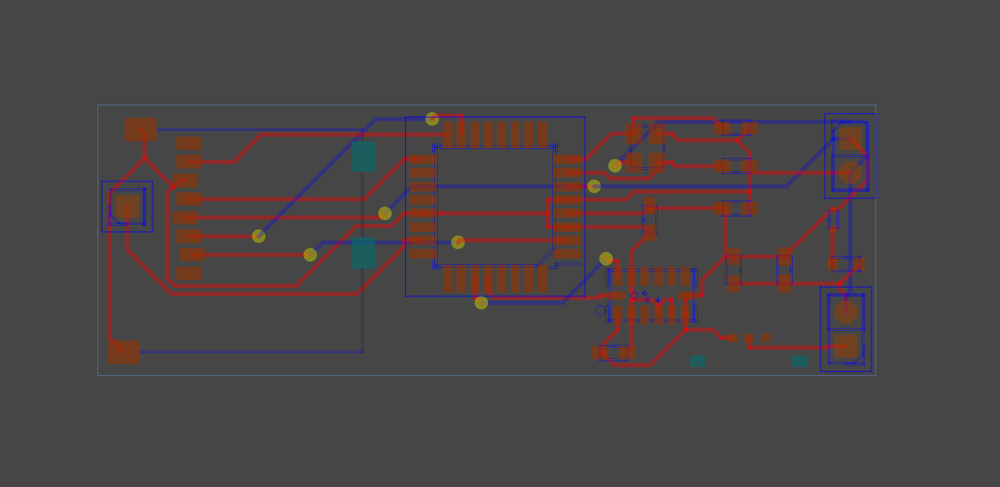
・1番当てはまりの良い配線を見つけたら、自動で止まってくれる。
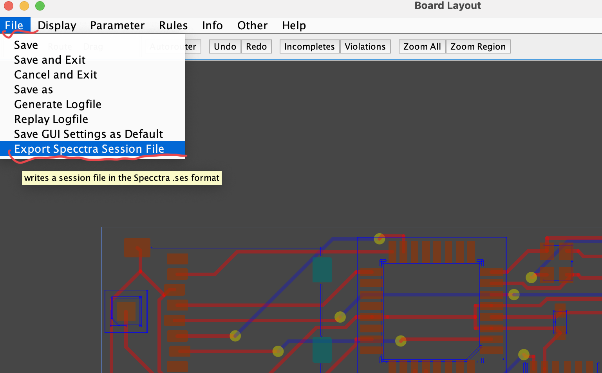
・Fileの1番下の赤線の部分をクリック。
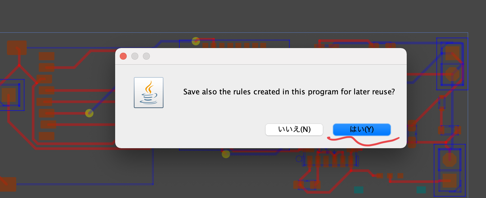
・はいを選択。
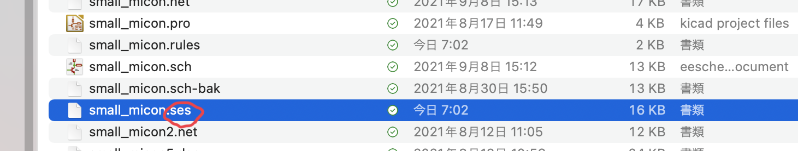
・そうすると拡張子dsnで入れたものが、sesになって保存されている。
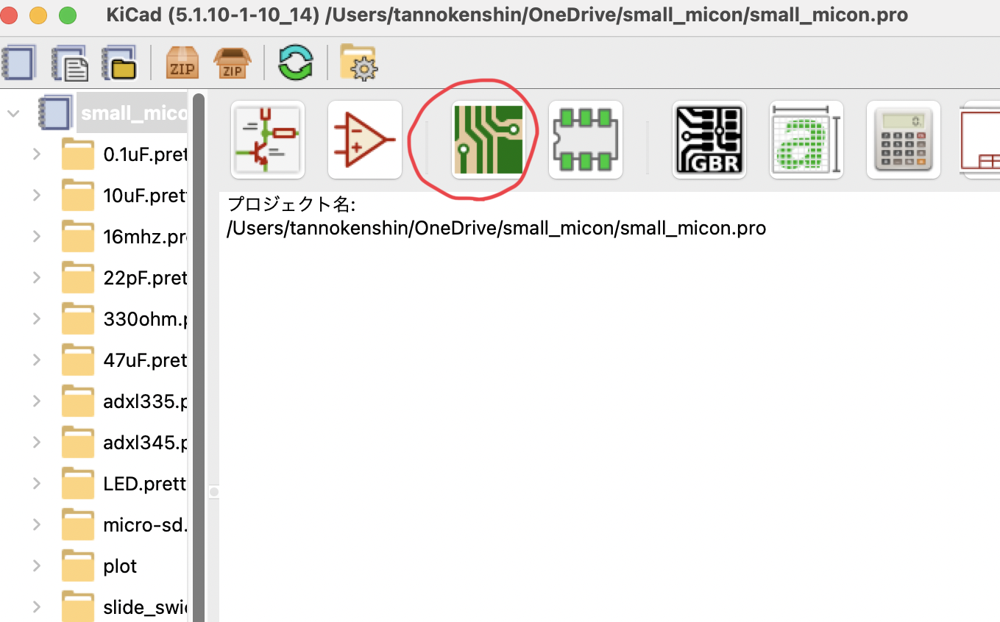
・kicadを開いて赤丸をクリック。
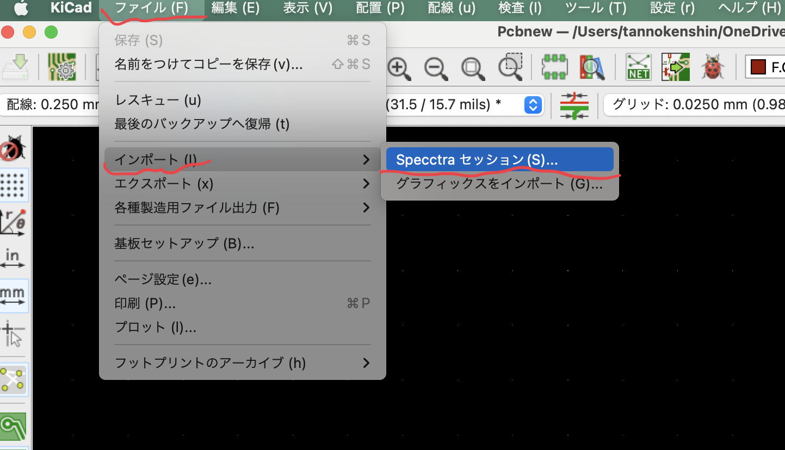
・ファイル>インポート>で赤線の部分をクリック。
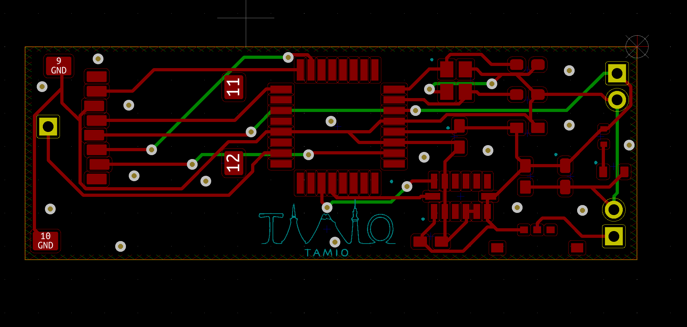
・そうすると配線された基盤が出現する。
・今回は自動配線を行いました。
Fin.